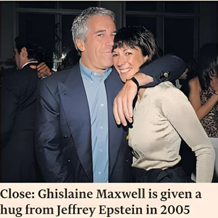

Ghislaine Maxwell has requested clemency in exchange for congressional testimony about her former partner Jeffrey Epstein, posing a dilemma for US President Donald Trump as he seeks to quash controversy around the late paedophile financier’s case.
“We would like to find a way to co-operate with Congress if a fair and safe path forward can be established,” wrote lawyers representing Maxwell in response to a congressional subpoena.
James Comer, chair of the House committee on oversight and government reform, had requested Maxwell’s deposition from a Florida prison where she is serving a 20-year sentence on sex trafficking charges.
The House committee said it “will not consider granting congressional immunity for her testimony.”
Trump said on Monday he had the authority to pardon Maxwell but “nobody’s approached me about it” and it would be “inappropriate to talk about it.” When a reporter asked Trump a question about Maxwell and Epstein on Tuesday evening he responded: “Be quiet.” His comments came after deputy attorney-general Todd Blanche interviewed Maxwell in Florida last week.
The letter from Maxwell’s lawyers adds to the predicament faced by the administration, which has come under attack from some Maga supporters for its handling of files linked to Epstein, who killed himself in 2019 while awaiting trial on sex trafficking charges.
House Speaker Mike Johnson last week sent lawmakers home early to avoid a vote on releasing files related to Epstein.
The case returned to the spotlight when a government memo published this month found there was no Epstein “client list” and no “credible evidence” the financier “blackmailed prominent individuals”—a U-turn from Trump’s campaign promise to make public files relating to the disgraced financier.
Trump sought to contain the pushback by directing US attorney-general Pam Bondi to ask US courts to unseal grand jury transcripts linked to Epstein and Maxwell—a request that one judge has already rejected.
The government’s efforts to quell anger over the case have opened an avenue for Maxwell to fight her sentence. Maxwell, who has served five years in prison, is seeking relief from legal proceedings her lawyers claim were unfair.
She has also asked the US Supreme Court to reassess her case, after arguing that a non-prosecution agreement the Department of Justice struck with Epstein shielded her from being charged.
The DoJ objected, telling the top court that “this case would be an unsuitable candidate for further review.”